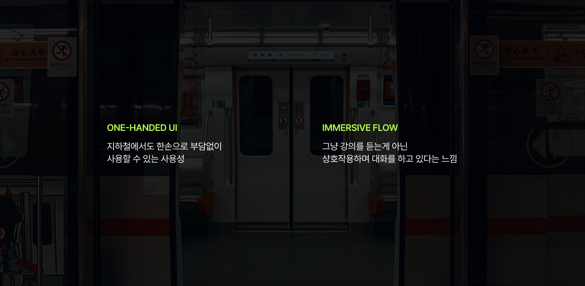
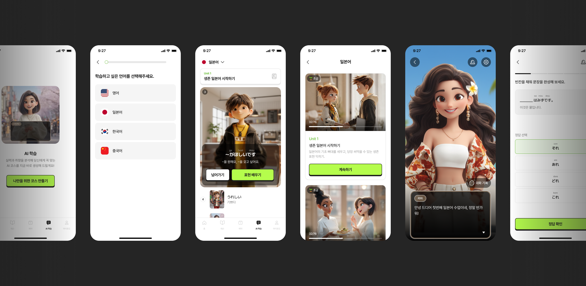
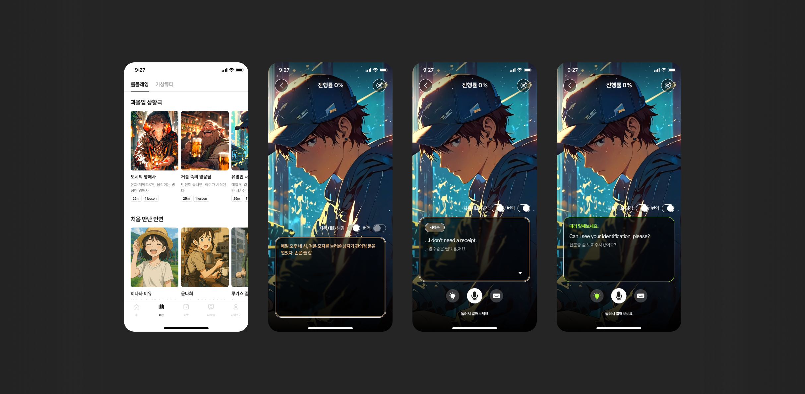
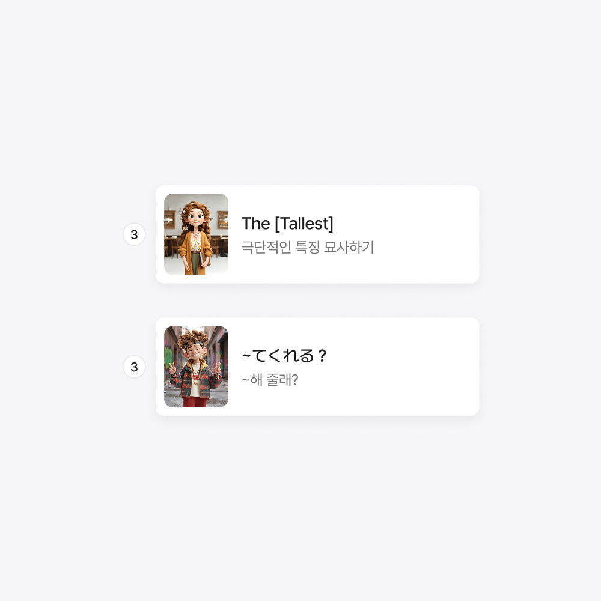
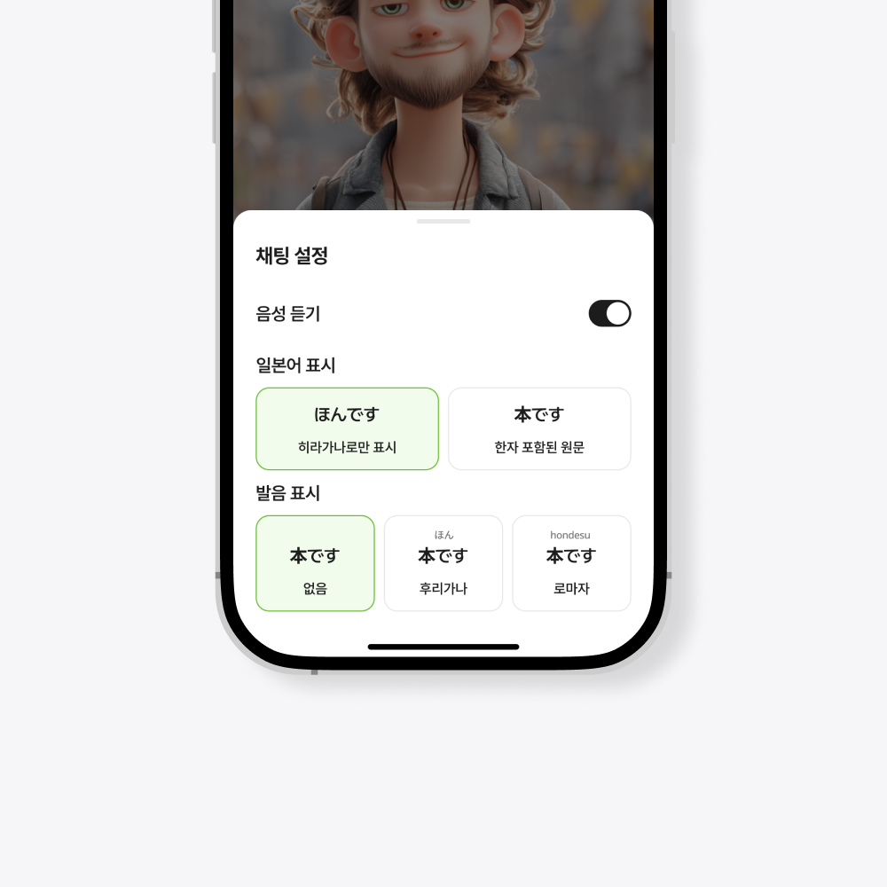
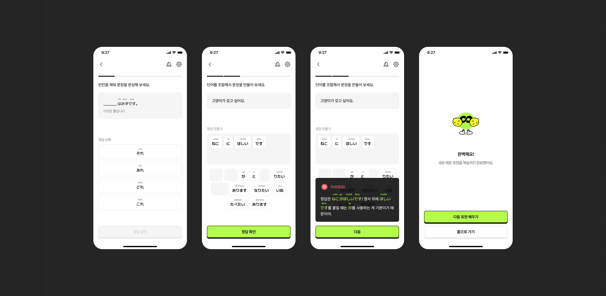
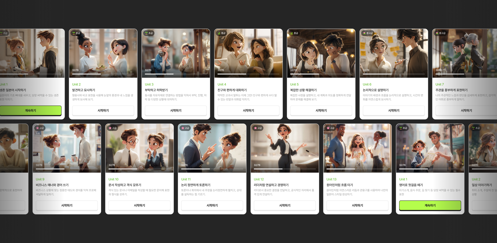
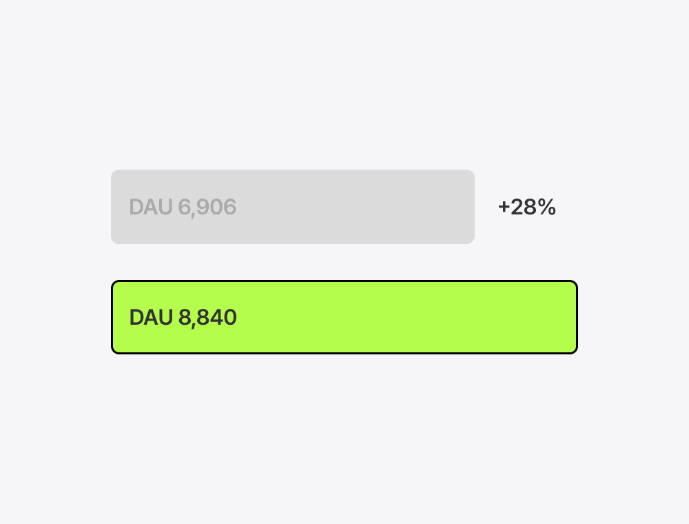
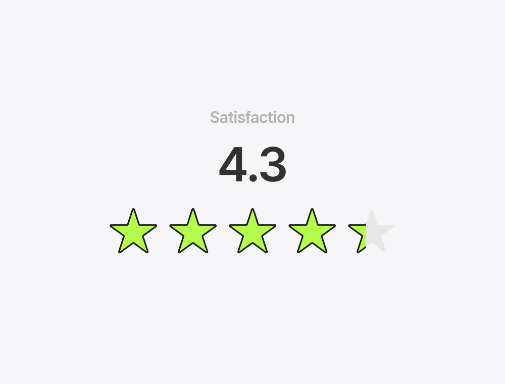

Podo Podolingo
AI를 활용해 누구나 가볍고 재미있게 언어를 배우는 표현 학습 기능입니다. 지하철이나 이동 중에도 한 손으로 쉽게 쓸 수 있고, 말하기가 두려운 초보 학습자도 부담 없이 시작하는 데 초점을 맞췄습니다.
DAU
+28%
Retention
42%
Satisfaction
4.3
Date
2025. 11
Role
Product Design
Type
App Feature

수업이 끝나면 열 이유가 없는 앱
포도는 원어민과 1:1 화상 수업을 예약하고 받는 앱입니다. 예약한 시간에 들어와서 수업을 받고 나가는 게 전부였고, 수업 시간 외에는 앱에 접속할 이유가 없었습니다. DAU와 리텐션이 수업 일정에 완전히 종속돼 있었고, 앱을 열지 않는 사이 학습 동기는 식고, 다음 수업 예약을 미루다가 이탈하는 패턴이 반복됐습니다.
수업 밖에서도 매일 앱을 열고, 부담 없이 언어에 노출되는 경험이 필요했습니다.

말하기가 두려운 초보자들
데이터를 보니 초급자의 이탈이 유독 높았고, 이유를 파고들어 보니 "원어민 앞에서 틀릴까 봐 입을 못 떼겠다"는 두려움이 핵심이었습니다. 말하기 연습이 필요한 사람이 오히려 말하기를 피하고 있었습니다. 또한 기존의 딱딱한 암기식 학습은 지하철 등 이동 중에 가볍게 하기엔 부담스러웠죠.
지하철에서도 한 손으로, 친구랑 수다 떨듯 가볍게 배울 순 없을까?
여기서 시작해, 학습의 무게감을 덜어내는 걸 가장 먼저 풀어야 할 과제로 잡았습니다.
처음부터 정답은 아니었다
처음에는 AI 캐릭터와 자유롭게 대화하는 기능을 만들었습니다. 대상이 AI면 부담 없이 말할 수 있을 거라 생각했지만, 그래도 입을 떼는 것 자체를 어려워하는 학습자가 많았습니다. 말하기라는 행동 자체가 장소의 제약과 심리적 무게를 주고 있었던 겁니다.
그래서 접근을 바꿨습니다. 처음부터 말하게 하지 않고, 게임처럼 대화 선택지를 클릭하며 표현을 익힌 뒤, 마지막에 배운 내용을 바탕으로 직접 말해보는 흐름으로 재설계했습니다.

학습이 아닌 놀이로 접근하기
1. 심리적 안전감: 사람 앞에서는 부끄럽지만, 귀여운 캐릭터 앞에서는 용기가 생깁니다. AI 페르소나를 도입해 평가받는 느낌을 없앴습니다.
2. 상호작용 설계: 텍스트를 읽는 게 아니라, 대화 선택지를 터치하며 표현을 익히고, 마지막에 직접 말해보는 단계적 인터페이스로 설계하여 진입 장벽을 낮추고 몰입감을 높였습니다.
3. 한 손 UX: 복잡한 커리큘럼 탐색 과정을 없앴습니다. 틱톡처럼 아는 건 넘기고, 모르는 것만 배우는 직관적인 흐름을 만들었습니다.
언어별 특성을 고려한 맞춤형 UX
언어마다 학습자가 필요로 하는 정보가 다릅니다. 그래서 하나의 UI로 통일하지 않고, 각 언어의 특성에 맞게 설계를 다르게 가져갔습니다.
1. 언어별 학습 멘탈 모델 반영: 어순이 비슷해 구조적 이해가 빠른 일본어는 직역을 제공해 문장 구조 학습을 도왔고, 뉘앙스와 의도 파악이 중요한 영어는 학습 목표를 상단에 배치해 실전 활용도를 높였습니다.
2. 개인화된 학습 보조 도구: 문자 장벽이 있는 일본어 학습자를 위해 실력에 따라 히라가나, 후리가나, 로마자 발음 등 표기 방식을 자유롭게 선택할 수 있는 옵션을 제공하여 학습 진입 장벽을 크게 낮췄습니다.


개인화된 학습의 시작, 맞춤형 온보딩
사용자의 학습 수준을 파악하는 4단계 온보딩에서 시작합니다. 코스 생성 직전 의도적인 3초 딜레이와 프로그레스 바를 배치해 Labor Illusion 효과를 주었고, AI가 나를 위해 고민하고 있다는 심리적 신뢰를 형성했습니다.
몰입을 유지하는 모드 전환, 복습 퀴즈
학습 세션이 끝나면 즉각적인 복습 퀴즈로 전환됩니다. 대화에서 퀴즈로 화면이 바뀌면서 분위기가 전환되고, 배운 내용을 다양한 방식으로 다시 확인하게 됩니다.

AI로 만든 무한한 콘텐츠
기존 방식대로라면 수백 개의 학습 영상을 촬영하고 편집하는 데 수개월이 걸렸을 겁니다. 하지만 이 프로젝트는 Time-to-Market이 중요했습니다.
Generative AI를 파이프라인 전반에 도입했습니다. 캐릭터 생성부터 목소리(TTS), 상황별 예문 이미지, 커리큘럼 구조까지 AI와 협업하여 제작했습니다.
디자이너로서 단순히 화면을 그리는 것을 넘어, 어떻게 하면 제작 리소스를 0에 수렴하게 만들까?를 고민하고 프로세스를 설계했던 경험이 가장 의미 있었습니다.

즐거움이 만든 데이터의 변화
"공부하러 들어왔다가 시간 가는 줄 몰랐다"는 사용자 리뷰가 이어졌습니다. 런칭 이후 DAU는 28% 상승했고, 이탈이 잦던 학습자층에서 Retention 42%를 기록했습니다. 서비스 만족도 조사(1,065명)에서는 4.3/5.0점을 기록했습니다.

